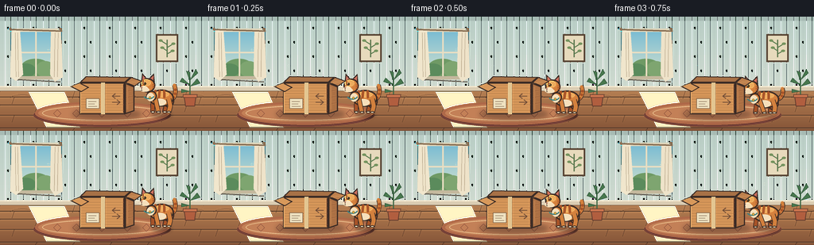
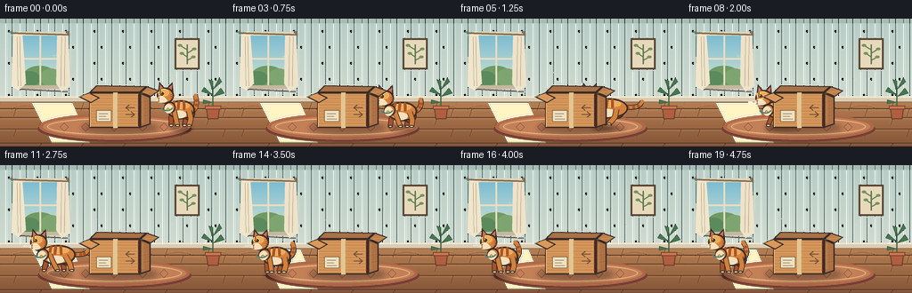

CODING AGENTS AS PIXEL WORLD MODELS
traex/DeepSeek-V4.1-Flash · dynamic_spatial_relationship_0007
点击播放 · 原生 RGB 像素
逐轮保存的候选
回放视频、检查图与代码变化。
每份候选均可单独播放。实际图片检查记录在下方工具轨迹中。
候选 01播放与检查图
点击播放 · 原生 RGB 像素


展开代码变化
--- 上一保存版本
+++ 本次保存版本
@@ -0,0 +1,481 @@
+"""Generate the cat-and-box spatial-relationship animation."""
+
+from __future__ import annotations
+
+import math
+import shutil
+import subprocess
+from pathlib import Path
+
+import numpy as np
+from PIL import Image, ImageDraw, ImageFilter
+
+import artifact_io
+
+
+WIDTH = 256
+HEIGHT = 144
+FRAMES = 20
+FPS = 4.0
+SS = 4
+
+INK = (58, 43, 37, 255)
+INK_SOFT = (82, 62, 51, 255)
+ORANGE = (211, 128, 61, 255)
+ORANGE_DARK = (167, 83, 40, 255)
+ORANGE_LIGHT = (239, 171, 94, 255)
+CREAM = (246, 224, 188, 255)
+
+
+def sc(value: float) -> float:
+ return round(value * SS)
+
+
+def box(values: tuple[float, float, float, float]) -> tuple[float, float, float, float]:
+ return tuple(sc(value) for value in values)
+
+
+def pt(values: tuple[float, float]) -> tuple[float, float]:
+ return (sc(values[0]), sc(values[1]))
+
+
+def smoothstep(value: float) -> float:
+ value = max(0.0, min(1.0, value))
+ return value * value * (3.0 - 2.0 * value)
+
+
+def lerp(a: float, b: float, t: float) -> float:
+ return a + (b - a) * t
+
+
+def rgba(color: tuple[int, int, int], alpha: int) -> tuple[int, int, int, int]:
+ return (*color, alpha)
+
+
+def vertical_gradient(size: tuple[int, int], top: tuple[int, int, int], bottom: tuple[int, int, int]) -> Image.Image:
+ width, height = size
+ mix = np.linspace(0.0, 1.0, height, dtype=np.float32)[:, None]
+ top_array = np.asarray(top, dtype=np.float32)
+ bottom_array = np.asarray(bottom, dtype=np.float32)
+ rows = top_array * (1.0 - mix) + bottom_array * mix
+ array = np.repeat(rows[:, None, :], width, axis=1).astype(np.uint8)
+ return Image.fromarray(array).convert("RGBA")
+
+
+def draw_static_scene() -> Image.Image:
+ image = vertical_gradient((sc(WIDTH), sc(HEIGHT)), (184, 205, 197), (220, 226, 214))
+ draw = ImageDraw.Draw(image, "RGBA")
+
+ # Quiet wallpaper texture.
+ for x in range(6, WIDTH, 16):
+ draw.rectangle((sc(x), 0, sc(x + 1), sc(92)), fill=(255, 255, 255, 18))
+ draw.rectangle((sc(x + 7), 0, sc(x + 8), sc(92)), fill=(73, 98, 89, 11))
+ for y in range(12, 90, 18):
+ for x in range(10 + (y // 18 % 2) * 8, WIDTH, 32):
+ draw.ellipse(box((x - 1.5, y, x + 1.5, y + 4)), fill=(88, 117, 102, 20))
+
+ # Window recess and trim.
+ draw.rectangle(box((17, 15, 73, 79)), fill=(109, 127, 119, 255))
+ draw.rectangle(box((20, 18, 70, 76)), fill=(136, 159, 149, 255))
+ sky = vertical_gradient((sc(50), sc(58)), (122, 188, 211), (213, 226, 206))
+ image.alpha_composite(sky, (sc(20), sc(18)))
+ draw = ImageDraw.Draw(image, "RGBA")
+ draw.ellipse(box((26, 53, 63, 76)), fill=(111, 154, 101, 255))
+ draw.ellipse(box((20, 59, 45, 76)), fill=(91, 139, 92, 255))
+ draw.ellipse(box((45, 56, 69, 76)), fill=(126, 165, 112, 255))
+ draw.line(box((45, 18, 45, 76)), fill=(233, 222, 194, 255), width=sc(2))
+ draw.line(box((20, 45, 70, 45)), fill=(233, 222, 194, 255), width=sc(2))
+ draw.rectangle(box((18, 15, 73, 19)), fill=(224, 214, 187, 255))
+ draw.rectangle(box((18, 75, 73, 79)), fill=(196, 184, 157, 255))
+ draw.line(box((18, 79, 76, 82)), fill=(117, 112, 99, 110), width=sc(2))
+
+ # Linen curtains with a few deeper folds.
+ draw.polygon([pt((15, 17)), pt((25, 17)), pt((29, 73)), pt((20, 81)), pt((13, 76))], fill=(241, 230, 205, 238))
+ draw.polygon([pt((64, 17)), pt((76, 17)), pt((79, 76)), pt((69, 82)), pt((63, 73))], fill=(239, 227, 201, 238))
+ for x in (19, 22, 69, 73):
+ draw.line((sc(x), sc(20), sc(x + (1 if x < 40 else -1)), sc(76)), fill=(188, 173, 145, 95), width=sc(1))
+ draw.line(box((12, 16, 78, 18)), fill=(133, 107, 80, 255), width=sc(2))
+ for x in (13, 76):
+ draw.ellipse(box((x - 1.5, 14, x + 1.5, 17)), fill=(133, 107, 80, 255))
+
+ # Small framed botanical print on the right wall.
+ draw.rectangle(box((196, 22, 224, 57)), fill=(86, 66, 50, 255))
+ draw.rectangle(box((198, 24, 222, 55)), fill=(231, 218, 188, 255))
+ draw.line(box((210, 29, 210, 51)), fill=(89, 116, 76, 255), width=sc(1.4))
+ for start, end in [((210, 35), (202, 30)), ((210, 39), (218, 34)), ((210, 43), (204, 39)), ((210, 47), (217, 43))]:
+ draw.line((*pt(start), *pt(end)), fill=(93, 126, 82, 255), width=sc(1.3))
+ ex, ey = end
+ draw.ellipse(box((ex - 2.5, ey - 1.5, ex + 2.5, ey + 1.5)), fill=(118, 148, 95, 255))
+
+ # Baseboard and wood floor.
+ draw.rectangle(box((0, 88, WIDTH, 94)), fill=(218, 204, 178, 255))
+ draw.line(box((0, 88, WIDTH, 88)), fill=(244, 232, 207, 255), width=sc(1.5))
+ draw.line(box((0, 94, WIDTH, 94)), fill=(105, 83, 65, 255), width=sc(1.5))
+ floor = vertical_gradient((sc(WIDTH), sc(HEIGHT - 94)), (180, 126, 82), (133, 85, 56))
+ image.paste(floor, (0, sc(94)))
+ draw = ImageDraw.Draw(image, "RGBA")
+ for y in (101, 111, 124, 140):
+ draw.line(box((0, y, WIDTH, y)), fill=(91, 60, 43, 120), width=sc(1))
+ draw.line(box((0, y + 1, WIDTH, y + 1)), fill=(222, 166, 111, 70), width=sc(0.7))
+ for index, y in enumerate((94, 101, 111, 124, 140)):
+ offset = 18 if index % 2 else 0
+ for x in range(offset, WIDTH, 47):
+ draw.line(box((x, y, x - 3, min(144, y + 9))), fill=(93, 61, 44, 100), width=sc(0.8))
+ for x in range(12, WIDTH, 43):
+ draw.arc(box((x, 98, x + 33, 109)), 192, 342, fill=(109, 73, 49, 52), width=sc(0.7))
+
+ # Window light spilling across the boards.
+ draw.polygon([pt((35, 94)), pt((81, 94)), pt((101, 140)), pt((58, 140))], fill=(255, 241, 196, 26))
+
+ # Oval woven rug.
+ draw.ellipse(box((42, 109, 215, 139)), fill=(119, 67, 55, 72))
+ draw.ellipse(box((44, 107, 213, 136)), fill=(174, 104, 72, 255))
+ draw.ellipse(box((48, 110, 209, 133)), fill=(195, 128, 87, 255))
+ draw.ellipse(box((53, 112, 204, 131)), outline=(238, 196, 145, 255), width=sc(1))
+ for x in (72, 96, 128, 160, 184):
+ draw.polygon([pt((x, 117)), pt((x + 5, 122)), pt((x, 127)), pt((x - 5, 122))], outline=(134, 76, 60, 210), width=sc(0.8))
+
+ # Static shadows for the box and small plant.
+ shadow = Image.new("RGBA", image.size, (0, 0, 0, 0))
+ shadow_draw = ImageDraw.Draw(shadow, "RGBA")
+ shadow_draw.ellipse(box((91, 116, 178, 130)), fill=(48, 31, 25, 92))
+ shadow = shadow.filter(ImageFilter.GaussianBlur(sc(3)))
+ image.alpha_composite(shadow)
+ draw = ImageDraw.Draw(image, "RGBA")
+
+ # Potted plant tucked into the right edge.
+ draw.line(box((239, 100, 239, 76)), fill=(65, 105, 70, 255), width=sc(1.5))
+ leaves = [
+ ((239, 86), (229, 77), (226, 82)),
+ ((239, 88), (248, 78), (252, 84)),
+ ((239, 82), (234, 68), (239, 70)),
+ ((239, 80), (246, 66), (249, 71)),
+ ((239, 94), (228, 91), (228, 96)),
+ ]
+ for center, tip, side in leaves:
+ draw.polygon([pt(center), pt(tip), pt(side)], fill=(72, 120, 78, 255), outline=(48, 86, 58, 255), width=sc(0.8))
+ draw.polygon([pt((231, 99)), pt((247, 99)), pt((245, 113)), pt((233, 113))], fill=(177, 94, 63, 255), outline=(99, 60, 46, 255), width=sc(1))
+ draw.rectangle(box((230, 98, 248, 102)), fill=(205, 118, 79, 255), outline=(99, 60, 46, 255), width=sc(0.8))
+
+ return image
+
+
+def sampled_bezier(points: tuple[tuple[float, float], ...], samples: int = 36) -> list[tuple[float, float]]:
+ result: list[tuple[float, float]] = []
+ for index in range(samples):
+ t = index / (samples - 1)
+ p0, p1, p2, p3 = points
+ u = 1.0 - t
+ x = u**3 * p0[0] + 3 * u * u * t * p1[0] + 3 * u * t * t * p2[0] + t**3 * p3[0]
+ y = u**3 * p0[1] + 3 * u * u * t * p1[1] + 3 * u * t * t * p2[1] + t**3 * p3[1]
+ result.append((x, y))
+ return result
+
+
+def outlined_line(
+ draw: ImageDraw.ImageDraw,
+ points: list[tuple[float, float]],
+ fill: tuple[int, int, int, int],
+ width: float,
+ outline: tuple[int, int, int, int] = INK,
+) -> None:
+ scaled = [(sc(x), sc(y)) for x, y in points]
+ draw.line(scaled, fill=outline, width=sc(width + 1.6), joint="curve")
+ draw.line(scaled, fill=fill, width=sc(width), joint="curve")
+ radius = sc(width / 2)
+ for x, y in (scaled[0], scaled[-1]):
+ draw.ellipse((x - radius, y - radius, x + radius, y + radius), fill=fill)
+
+
+def draw_cat_shadow(scene: Image.Image, x: float, ground_y: float, run: float) -> None:
+ shadow = Image.new("RGBA", scene.size, (0, 0, 0, 0))
+ draw = ImageDraw.Draw(shadow, "RGBA")
+ width = 25 + 13 * run
+ height = 5.5 - 1.0 * run
+ draw.ellipse(box((x - width / 2, ground_y - height / 2, x + width / 2, ground_y + height / 2)), fill=(46, 29, 22, 112))
+ shadow = shadow.filter(ImageFilter.GaussianBlur(sc(2.2)))
+ scene.alpha_composite(shadow)
+
+
+def draw_cat(scene: Image.Image, x: float, ground_y: float, run: float, crouch: float, phase: float, tail_phase: float, ear_twitch: float) -> None:
+ draw = ImageDraw.Draw(scene, "RGBA")
+ r = max(0.0, min(1.0, run))
+ c = max(0.0, min(1.0, crouch))
+ bob = -2.3 * max(0.0, math.sin(phase * 2.0)) * r
+ x = x
+ y = ground_y + bob + 2.0 * c
+
+ body_center = (x + 1.0 + 1.0 * r, y - 20.0 + 1.2 * c)
+ body_w = 15.5 + 5.5 * r
+ body_h = 10.7 + 0.5 * r
+ head_x = x - 16.0 - 4.0 * r
+ head_y = y - 36.0 + 2.8 * r + 1.8 * c
+
+ # Tail: upright and curled while seated, trailing behind during the run.
+ seated_tail = (
+ (x + 10.0, y - 18.0),
+ (x + 19.0, y - 17.0),
+ (x + 20.0 + 1.5 * math.sin(tail_phase), y - 30.0),
+ (x + 15.0 + 3.0 * math.sin(tail_phase + 0.8), y - 36.0),
+ )
+ running_tail = (
+ (x + 11.0, y - 20.0),
+ (x + 25.0, y - 23.0 + 2.0 * math.sin(tail_phase)),
+ (x + 34.0, y - 17.0 + 3.0 * math.sin(tail_phase + 0.5)),
+ (x + 39.0, y - 25.0 + 4.0 * math.sin(tail_phase + 0.9)),
+ )
+ tail_points = [
+ (lerp(a[0], b[0], r), lerp(a[1], b[1], r))
+ for a, b in zip(sampled_bezier(seated_tail), sampled_bezier(running_tail))
+ ]
+ outlined_line(draw, tail_points, ORANGE, 4.2 - 0.4 * r, INK)
+ for fraction in (0.34, 0.56, 0.77):
+ index = int(fraction * (len(tail_points) - 1))
+ p = tail_points[index]
+ draw.ellipse(box((p[0] - 1.7, p[1] - 1.6, p[0] + 1.7, p[1] + 1.6)), fill=ORANGE_DARK)
+
+ # Far legs sit behind the body.
+ far_hind = [
+ (x + 7.0, y - 18.0 + 1.0 * c),
+ (x + 7.0 + 3.0 * r * math.sin(phase + math.pi), y - 10.0),
+ (x + 5.0 + 8.0 * r * math.sin(phase + math.pi), y - 2.3),
+ ]
+ far_front = [
+ (x - 9.0, y - 20.0 + 1.0 * c),
+ (x - 10.0 + 3.5 * r * math.sin(phase), y - 11.0),
+ (x - 10.0 + 8.5 * r * math.sin(phase), y - 2.3),
+ ]
+ outlined_line(draw, far_hind, ORANGE_DARK, 4.6, INK)
+ outlined_line(draw, far_front, ORANGE_DARK, 4.2, INK)
+ for p in (far_hind[-1], far_front[-1]):
+ draw.ellipse(box((p[0] - 2.4, p[1] - 1.6, p[0] + 2.8, p[1] + 1.5)), fill=CREAM, outline=INK, width=sc(1))
+
+ # Hind haunch and torso.
+ draw.ellipse(
+ box((x + 3.0, y - 25.0 + 2.0 * c, x + 17.0 + 2.0 * r, y - 8.0 + 3.0 * c)),
+ fill=ORANGE_DARK,
+ outline=INK,
+ width=sc(1.6),
+ )
+ draw.ellipse(
+ box((body_center[0] - body_w, body_center[1] - body_h, body_center[0] + body_w, body_center[1] + body_h)),
+ fill=ORANGE,
+ outline=INK,
+ width=sc(1.7),
+ )
+ # Warm top light and cream belly.
+ draw.ellipse(
+ box((body_center[0] - body_w * 0.78, body_center[1] - body_h * 0.82, body_center[0] + body_w * 0.64, body_center[1] - body_h * 0.05)),
+ fill=rgba(ORANGE_LIGHT[:3], 82),
+ )
+ draw.ellipse(
+ box((body_center[0] - body_w * 0.58, body_center[1] + body_h * 0.08, body_center[0] + body_w * 0.38, body_center[1] + body_h * 0.9)),
+ fill=rgba(CREAM[:3], 205),
+ )
+
+ # Three back stripes.
+ for offset, lean in ((-7.5, -1.4), (-2.2, -0.8), (3.2, 0.3)):
+ p0 = (body_center[0] + offset, body_center[1] - body_h * 0.9)
+ p1 = (body_center[0] + offset + lean, body_center[1] - body_h * 0.4)
+ p2 = (body_center[0] + offset + lean * 1.4, body_center[1] - body_h * 0.05)
+ outlined_line(draw, [p0, p1, p2], ORANGE_DARK, 1.5, rgba(ORANGE_DARK[:3], 150))
+
+ # Near legs.
+ near_hind = [
+ (x + 10.0, y - 19.0 + 1.0 * c),
+ (x + 12.0 + 4.0 * r * math.sin(phase + math.pi + 0.8), y - 10.0),
+ (x + 10.0 + 9.0 * r * math.sin(phase + math.pi + 0.8), y - 2.2),
+ ]
+ near_front = [
+ (x - 7.0, y - 20.0 + 1.0 * c),
+ (x - 5.0 + 4.0 * r * math.sin(phase + math.pi), y - 11.0),
+ (x - 3.0 + 10.0 * r * math.sin(phase + math.pi), y - 2.2),
+ ]
+ outlined_line(draw, near_hind, ORANGE, 5.0, INK)
+ outlined_line(draw, near_front, ORANGE, 4.5, INK)
+ for p in (near_hind[-1], near_front[-1]):
+ draw.ellipse(box((p[0] - 2.5, p[1] - 1.6, p[0] + 2.9, p[1] + 1.5)), fill=CREAM, outline=INK, width=sc(1))
+
+ # Neck ruff softens the head/body join.
+ draw.ellipse(box((head_x - 2.0, head_y + 7.0, head_x + 11.0, head_y + 20.0)), fill=ORANGE, outline=INK, width=sc(1.5))
+ draw.ellipse(box((head_x - 1.5, head_y + 9.5, head_x + 8.0, head_y + 20.0)), fill=CREAM)
+
+ # Ears first, then the head covers their bases.
+ ear_left = [
+ (head_x - 8.4, head_y - 4.5),
+ (head_x - 7.2 - ear_twitch, head_y - 15.5),
+ (head_x - 0.8, head_y - 7.8),
+ ]
+ ear_right = [
+ (head_x + 0.7, head_y - 8.0),
+ (head_x + 7.6, head_y - 15.0),
+ (head_x + 8.5, head_y - 4.0),
+ ]
+ for ear in (ear_left, ear_right):
+ draw.polygon([pt(p) for p in ear], fill=ORANGE, outline=INK, width=sc(1.5))
+ draw.polygon([pt((head_x - 6.8, head_y - 6.3)), pt((head_x - 6.6, head_y - 12.5)), pt((head_x - 2.2, head_y - 7.8))], fill=(207, 113, 96, 255))
+ draw.polygon([pt((head_x + 2.2, head_y - 7.9)), pt((head_x + 7.0, head_y - 12.2)), pt((head_x + 6.8, head_y - 6.0))], fill=(207, 113, 96, 255))
+
+ draw.ellipse(box((head_x - 10.0, head_y - 9.0, head_x + 9.2, head_y + 9.0)), fill=ORANGE, outline=INK, width=sc(1.7))
+ draw.ellipse(box((head_x - 9.0, head_y - 8.0, head_x + 4.0, head_y + 1.5)), fill=rgba(ORANGE_LIGHT[:3], 62))
+
+ # Cream muzzle and cheek.
+ draw.ellipse(box((head_x - 10.5, head_y + 1.0, head_x + 0.2, head_y + 8.0)), fill=CREAM)
+ draw.ellipse(box((head_x - 7.0, head_y + 3.2, head_x + 1.8, head_y + 8.0)), fill=CREAM)
+
+ # Face: one near eye, small nose, mouth, forehead marks.
+ eye_x, eye_y = head_x - 4.3, head_y - 2.2
+ draw.ellipse(box((eye_x - 2.1, eye_y - 1.6, eye_x + 2.1, eye_y + 1.7)), fill=(49, 43, 32, 255), outline=INK, width=sc(0.6))
+ draw.ellipse(box((eye_x - 0.9, eye_y - 1.2, eye_x + 0.9, eye_y + 1.1)), fill=(205, 151, 50, 255))
+ draw.ellipse(box((eye_x - 0.35, eye_y - 0.95, eye_x + 0.45, eye_y + 0.95)), fill=(20, 19, 17, 255))
+ draw.ellipse(box((eye_x - 1.2, eye_y - 1.25, eye_x - 0.2, eye_y - 0.45)), fill=(255, 247, 218, 235))
+ nose = (head_x - 8.0, head_y + 3.1)
+ draw.polygon([pt((nose[0] - 1.4, nose[1] - 0.7)), pt((nose[0] + 1.2, nose[1] - 0.7)), pt((nose[0], nose[1] + 0.8))], fill=(151, 78, 65, 255))
+ draw.line((sc(nose[0]), sc(nose[1] + 0.7), sc(nose[0]), sc(nose[1] + 2.2)), fill=INK_SOFT, width=sc(0.8))
+ draw.arc(box((nose[0] - 2.2, nose[1] + 1.1, nose[0] + 0.2, nose[1] + 3.8)), 5, 85, fill=INK_SOFT, width=sc(0.8))
+ draw.arc(box((nose[0] - 0.2, nose[1] + 1.1, nose[0] + 2.3, nose[1] + 3.8)), 95, 175, fill=INK_SOFT, width=sc(0.8))
+ for dy in (-0.6, 1.7, 3.8):
+ draw.line((sc(head_x - 6.0), sc(head_y - 6.3 + dy), sc(head_x - 6.0), sc(head_y - 4.2 + dy)), fill=ORANGE_DARK, width=sc(0.9))
+ for dy, end_y in ((0.0, -1.2), (2.0, 1.0), (4.0, 3.2)):
+ draw.line((sc(head_x + 5.5), sc(head_y - 1.0 + dy), sc(head_x + 8.6), sc(head_y + end_y)), fill=ORANGE_DARK, width=sc(1.0))
+
+ # Whiskers are light but dark enough to survive the final downsample.
+ for y_offset, curve in ((-0.5, 1.2), (1.3, 0.1), (3.1, -1.1)):
+ points = [
+ (head_x - 8.2, head_y + 3.4 + y_offset),
+ (head_x - 13.5, head_y + 2.5 + y_offset + curve),
+ (head_x - 18.0, head_y + 2.8 + y_offset + curve * 1.4),
+ ]
+ draw.line([pt(p) for p in points], fill=(255, 243, 214, 205), width=sc(0.55))
+
+ # A tiny collar catches the window light.
+ draw.arc(box((head_x - 5.5, head_y + 9.0, head_x + 8.0, head_y + 17.5)), 8, 165, fill=(60, 129, 128, 255), width=sc(1.5))
+ draw.ellipse(box((head_x + 1.0, head_y + 14.0, head_x + 4.0, head_y + 17.0)), fill=(228, 181, 67, 255), outline=(116, 86, 42, 255), width=sc(0.5))
+
+
+def draw_box(scene: Image.Image) -> None:
+ draw = ImageDraw.Draw(scene, "RGBA")
+ front = (100, 83, 157, 123)
+ right = [(157, 83), (169, 88), (169, 119), (157, 123)]
+
+ # Back flap, interior and side planes.
+ draw.polygon([pt((100, 83)), pt((157, 83)), pt((165, 76)), pt((108, 75))], fill=(167, 113, 70, 255), outline=INK, width=sc(1.2))
+ draw.polygon([pt((100, 83)), pt((157, 83)), pt((169, 88)), pt((112, 89))], fill=(83, 59, 46, 255), outline=INK, width=sc(1.2))
+ draw.polygon([pt(p) for p in right], fill=(171, 112, 68, 255), outline=INK, width=sc(1.4))
+ draw.rectangle(box(front), fill=(206, 145, 86, 255), outline=INK, width=sc(1.5))
+
+ # Corrugation and worn edges.
+ for y in (90, 97, 104, 111, 118):
+ draw.line(box((101, y, 156, y)), fill=(168, 107, 65, 42), width=sc(0.65))
+ for y in (94, 102, 110):
+ draw.line((*pt((158, y)), *pt((168, y - 2))), fill=(126, 76, 52, 54), width=sc(0.7))
+ draw.line(box((101, 84, 101, 122)), fill=(236, 181, 113, 150), width=sc(1))
+ draw.line(box((155, 85, 155, 121)), fill=(119, 74, 52, 100), width=sc(1))
+ draw.line(box((160, 88, 160, 117)), fill=(224, 161, 100, 85), width=sc(0.7))
+
+ # Open flaps.
+ draw.polygon([pt((100, 83)), pt((112, 89)), pt((102, 95)), pt((88, 88))], fill=(216, 153, 91, 255), outline=INK, width=sc(1.3))
+ draw.polygon([pt((157, 83)), pt((169, 88)), pt((179, 81)), pt((165, 76))], fill=(188, 127, 77, 255), outline=INK, width=sc(1.3))
+ draw.line(box((101, 84, 89, 88)), fill=(235, 181, 111, 150), width=sc(0.8))
+ draw.line(box((158, 84, 177, 81)), fill=(232, 176, 107, 100), width=sc(0.8))
+
+ # Packing tape and shipping label.
+ draw.rectangle(box((127, 83, 132, 123)), fill=(228, 198, 145, 120))
+ draw.line(box((127, 83, 127, 123)), fill=(249, 225, 173, 125), width=sc(0.6))
+ draw.line(box((132, 83, 132, 123)), fill=(147, 102, 72, 65), width=sc(0.6))
+ draw.rectangle(box((108, 103, 125, 116)), fill=(238, 225, 192, 255), outline=(129, 98, 71, 255), width=sc(0.8))
+ draw.line(box((111, 107, 121, 107)), fill=(134, 110, 87, 210), width=sc(0.7))
+ draw.line(box((111, 110, 119, 110)), fill=(134, 110, 87, 180), width=sc(0.7))
+ draw.line(box((111, 113, 122, 113)), fill=(134, 110, 87, 180), width=sc(0.7))
+
+ # Hand-drawn arrows make the carton read as a box at thumbnail size.
+ draw.line(box((141, 100, 151, 100)), fill=(112, 77, 56, 210), width=sc(1))
+ draw.line(box((141, 100, 145, 97)), fill=(112, 77, 56, 210), width=sc(1))
+ draw.line(box((141, 100, 145, 103)), fill=(112, 77, 56, 210), width=sc(1))
+ draw.line(box((151, 108, 141, 108)), fill=(112, 77, 56, 210), width=sc(1))
+ draw.line(box((151, 108, 147, 105)), fill=(112, 77, 56, 210), width=sc(1))
+ draw.line(box((151, 108, 147, 111)), fill=(112, 77, 56, 210), width=sc(1))
+
+
+def dust_motes(scene: Image.Image, frame_index: int) -> None:
+ draw = ImageDraw.Draw(scene, "RGBA")
+ motes = [
+ (62, 42, 0.45, 5.0),
+ (83, 29, 0.35, 7.0),
+ (108, 61, 0.30, 4.0),
+ (177, 36, 0.28, 6.0),
+ (193, 67, 0.38, 3.5),
+ ]
+ for x, y, radius, speed in motes:
+ dx = 1.3 * math.sin(frame_index * 0.8 + y)
+ dy = 0.7 * math.sin(frame_index * 0.5 + x)
+ draw.ellipse(
+ box((x + dx - radius, y + dy - radius, x + dx + radius, y + dy + radius)),
+ fill=(255, 244, 196, 64),
+ )
+
+
+def render_frame(background: Image.Image, frame_index: int) -> Image.Image:
+ scene = background.copy()
+ positions = [202, 202, 200, 194, 184, 170, 152, 131, 110, 91, 75, 63, 57, 54, 53, 53, 53, 53, 53, 53]
+ run_values = [0.0, 0.0, 0.08, 0.24, 0.68, 1.0, 1.0, 1.0, 1.0, 1.0, 1.0, 0.82, 0.52, 0.28, 0.12, 0.04, 0.0, 0.0, 0.0, 0.0]
+ crouch_values = [0.0, 0.12, 0.38, 0.68, 0.35, 0.0, 0.0, 0.0, 0.0, 0.0, 0.0, 0.0, 0.18, 0.12, 0.04, 0.0, 0.0, 0.0, 0.0, 0.0]
+
+ x = positions[frame_index]
+ run = run_values[frame_index]
+ crouch = crouch_values[frame_index]
+ phase = frame_index * 1.48
+ tail_phase = frame_index * 0.58
+ ear_twitch = 1.7 if frame_index == 2 else (0.8 if frame_index == 3 else (1.0 if frame_index == 16 else 0.0))
+
+ ground_y = 122.5
+ draw_cat_shadow(scene, x + 1.0, ground_y + 1.2, run)
+ draw_cat(scene, x, ground_y, run, crouch, phase, tail_phase, ear_twitch)
+ draw_box(scene)
+ dust_motes(scene, frame_index)
+
+ # Gentle vignette and a warm floor bounce keep the tiny frame cohesive.
+ overlay = Image.new("RGBA", scene.size, (0, 0, 0, 0))
+ draw = ImageDraw.Draw(overlay, "RGBA")
+ draw.rectangle(box((0, 0, WIDTH, 5)), fill=(31, 45, 42, 28))
+ draw.rectangle(box((0, 139, WIDTH, 144)), fill=(49, 31, 24, 22))
+ scene.alpha_composite(overlay)
+
+ return scene.resize((WIDTH, HEIGHT), Image.Resampling.LANCZOS).convert("RGB")
+
+
+def main() -> None:
+ case_dir = Path(__file__).resolve().parent
+ background = draw_static_scene()
+ frames = np.stack([np.asarray(render_frame(background, index), dtype=np.uint8) for index in range(FRAMES)])
+ artifact_io.save(frames, case_dir)
+
+ ffmpeg = shutil.which("ffmpeg")
+ if ffmpeg:
+ subprocess.run(
+ [
+ ffmpeg,
+ "-y",
+ "-loglevel",
+ "error",
+ "-framerate",
+ str(FPS),
+ "-i",
+ str(case_dir / "frames" / "%02d.png"),
+ "-c:v",
+ "libx264",
+ "-pix_fmt",
+ "yuv420p",
+ "-crf",
+ "16",
+ "-movflags",
+ "+faststart",
+ str(case_dir / "video.mp4"),
+ ],
+ check=True,
+ )
+ print(f"generated {FRAMES} frames at {WIDTH}x{HEIGHT}, {FPS:g} fps")
+
+
+if __name__ == "__main__":
+ main()
候选 02播放与检查图
点击播放 · 原生 RGB 像素

展开代码变化
--- 上一保存版本
+++ 本次保存版本
@@ -355,46 +355,46 @@
def draw_box(scene: Image.Image) -> None:
draw = ImageDraw.Draw(scene, "RGBA")
- front = (100, 83, 157, 123)
- right = [(157, 83), (169, 88), (169, 119), (157, 123)]
+ front = (105, 83, 159, 123)
+ right = [(159, 83), (171, 88), (171, 119), (159, 123)]
# Back flap, interior and side planes.
- draw.polygon([pt((100, 83)), pt((157, 83)), pt((165, 76)), pt((108, 75))], fill=(167, 113, 70, 255), outline=INK, width=sc(1.2))
- draw.polygon([pt((100, 83)), pt((157, 83)), pt((169, 88)), pt((112, 89))], fill=(83, 59, 46, 255), outline=INK, width=sc(1.2))
+ draw.polygon([pt((105, 83)), pt((159, 83)), pt((167, 76)), pt((113, 75))], fill=(167, 113, 70, 255), outline=INK, width=sc(1.2))
+ draw.polygon([pt((105, 83)), pt((159, 83)), pt((171, 88)), pt((117, 89))], fill=(83, 59, 46, 255), outline=INK, width=sc(1.2))
draw.polygon([pt(p) for p in right], fill=(171, 112, 68, 255), outline=INK, width=sc(1.4))
draw.rectangle(box(front), fill=(206, 145, 86, 255), outline=INK, width=sc(1.5))
# Corrugation and worn edges.
for y in (90, 97, 104, 111, 118):
- draw.line(box((101, y, 156, y)), fill=(168, 107, 65, 42), width=sc(0.65))
+ draw.line(box((106, y, 158, y)), fill=(168, 107, 65, 42), width=sc(0.65))
for y in (94, 102, 110):
- draw.line((*pt((158, y)), *pt((168, y - 2))), fill=(126, 76, 52, 54), width=sc(0.7))
- draw.line(box((101, 84, 101, 122)), fill=(236, 181, 113, 150), width=sc(1))
- draw.line(box((155, 85, 155, 121)), fill=(119, 74, 52, 100), width=sc(1))
- draw.line(box((160, 88, 160, 117)), fill=(224, 161, 100, 85), width=sc(0.7))
+ draw.line((*pt((160, y)), *pt((170, y - 2))), fill=(126, 76, 52, 54), width=sc(0.7))
+ draw.line(box((106, 84, 106, 122)), fill=(236, 181, 113, 150), width=sc(1))
+ draw.line(box((158, 85, 158, 121)), fill=(119, 74, 52, 100), width=sc(1))
+ draw.line(box((162, 88, 162, 117)), fill=(224, 161, 100, 85), width=sc(0.7))
# Open flaps.
- draw.polygon([pt((100, 83)), pt((112, 89)), pt((102, 95)), pt((88, 88))], fill=(216, 153, 91, 255), outline=INK, width=sc(1.3))
- draw.polygon([pt((157, 83)), pt((169, 88)), pt((179, 81)), pt((165, 76))], fill=(188, 127, 77, 255), outline=INK, width=sc(1.3))
- draw.line(box((101, 84, 89, 88)), fill=(235, 181, 111, 150), width=sc(0.8))
- draw.line(box((158, 84, 177, 81)), fill=(232, 176, 107, 100), width=sc(0.8))
+ draw.polygon([pt((105, 83)), pt((117, 89)), pt((107, 95)), pt((93, 88))], fill=(216, 153, 91, 255), outline=INK, width=sc(1.3))
+ draw.polygon([pt((159, 83)), pt((171, 88)), pt((181, 81)), pt((167, 76))], fill=(188, 127, 77, 255), outline=INK, width=sc(1.3))
+ draw.line(box((106, 84, 94, 88)), fill=(235, 181, 111, 150), width=sc(0.8))
+ draw.line(box((160, 84, 179, 81)), fill=(232, 176, 107, 100), width=sc(0.8))
# Packing tape and shipping label.
- draw.rectangle(box((127, 83, 132, 123)), fill=(228, 198, 145, 120))
- draw.line(box((127, 83, 127, 123)), fill=(249, 225, 173, 125), width=sc(0.6))
- draw.line(box((132, 83, 132, 123)), fill=(147, 102, 72, 65), width=sc(0.6))
- draw.rectangle(box((108, 103, 125, 116)), fill=(238, 225, 192, 255), outline=(129, 98, 71, 255), width=sc(0.8))
- draw.line(box((111, 107, 121, 107)), fill=(134, 110, 87, 210), width=sc(0.7))
- draw.line(box((111, 110, 119, 110)), fill=(134, 110, 87, 180), width=sc(0.7))
- draw.line(box((111, 113, 122, 113)), fill=(134, 110, 87, 180), width=sc(0.7))
+ draw.rectangle(box((132, 83, 137, 123)), fill=(228, 198, 145, 120))
+ draw.line(box((132, 83, 132, 123)), fill=(249, 225, 173, 125), width=sc(0.6))
+ draw.line(box((137, 83, 137, 123)), fill=(147, 102, 72, 65), width=sc(0.6))
+ draw.rectangle(box((113, 103, 130, 116)), fill=(238, 225, 192, 255), outline=(129, 98, 71, 255), width=sc(0.8))
+ draw.line(box((116, 107, 126, 107)), fill=(134, 110, 87, 210), width=sc(0.7))
+ draw.line(box((116, 110, 124, 110)), fill=(134, 110, 87, 180), width=sc(0.7))
+ draw.line(box((116, 113, 127, 113)), fill=(134, 110, 87, 180), width=sc(0.7))
# Hand-drawn arrows make the carton read as a box at thumbnail size.
- draw.line(box((141, 100, 151, 100)), fill=(112, 77, 56, 210), width=sc(1))
- draw.line(box((141, 100, 145, 97)), fill=(112, 77, 56, 210), width=sc(1))
- draw.line(box((141, 100, 145, 103)), fill=(112, 77, 56, 210), width=sc(1))
- draw.line(box((151, 108, 141, 108)), fill=(112, 77, 56, 210), width=sc(1))
- draw.line(box((151, 108, 147, 105)), fill=(112, 77, 56, 210), width=sc(1))
- draw.line(box((151, 108, 147, 111)), fill=(112, 77, 56, 210), width=sc(1))
+ draw.line(box((146, 100, 156, 100)), fill=(112, 77, 56, 210), width=sc(1))
+ draw.line(box((146, 100, 150, 97)), fill=(112, 77, 56, 210), width=sc(1))
+ draw.line(box((146, 100, 150, 103)), fill=(112, 77, 56, 210), width=sc(1))
+ draw.line(box((156, 108, 146, 108)), fill=(112, 77, 56, 210), width=sc(1))
+ draw.line(box((156, 108, 152, 105)), fill=(112, 77, 56, 210), width=sc(1))
+ draw.line(box((156, 108, 152, 111)), fill=(112, 77, 56, 210), width=sc(1))
def dust_motes(scene: Image.Image, frame_index: int) -> None:
@@ -417,7 +417,7 @@
def render_frame(background: Image.Image, frame_index: int) -> Image.Image:
scene = background.copy()
- positions = [202, 202, 200, 194, 184, 170, 152, 131, 110, 91, 75, 63, 57, 54, 53, 53, 53, 53, 53, 53]
+ positions = [204, 204, 202, 196, 186, 172, 154, 133, 112, 93, 77, 66, 61, 59, 58, 58, 58, 58, 58, 58]
run_values = [0.0, 0.0, 0.08, 0.24, 0.68, 1.0, 1.0, 1.0, 1.0, 1.0, 1.0, 0.82, 0.52, 0.28, 0.12, 0.04, 0.0, 0.0, 0.0, 0.0]
crouch_values = [0.0, 0.12, 0.38, 0.68, 0.35, 0.0, 0.0, 0.0, 0.0, 0.0, 0.0, 0.0, 0.18, 0.12, 0.04, 0.0, 0.0, 0.0, 0.0, 0.0]
@@ -451,6 +451,13 @@
artifact_io.save(frames, case_dir)
ffmpeg = shutil.which("ffmpeg")
+ if not ffmpeg:
+ try:
+ import imageio_ffmpeg
+
+ ffmpeg = imageio_ffmpeg.get_ffmpeg_exe()
+ except (ImportError, RuntimeError):
+ ffmpeg = None
if ffmpeg:
subprocess.run(
[
候选 03播放与检查图
可观测工具轨迹
实际执行的命令与返回图片。
命令 1exit 0
/bin/bash -c "pwd && rg --files -g 'prompt.txt' -g 'GENERATION_RULES.md' -g 'task_spec.json' -g '"'!**/.git/**'"'"
命令 2exit 0
/bin/bash -c 'ls -la'
命令 3exit 0
/bin/bash -c 'git status --short --branch'
命令 4exit 0
/bin/bash -c 'cat prompt.txt'
命令 5exit 0
/bin/bash -c 'cat GENERATION_RULES.md'
命令 6exit 0
/bin/bash -c 'cat task_spec.json'
命令 7exit 0
/bin/bash -c "sed -n '1,240p' artifact_io.py"
命令 8exit 1
/bin/bash -c 'python generate.py'
命令 9exit 0
/bin/bash -c "rg -n \"width=sc\\(\" generate.py"
命令 10exit 0
/bin/bash -c 'python generate.py'
命令 11exit 2
/bin/bash -c 'ls -lh inspection.png transition_check.png video.mp4 pixels.npz frames/00.png frames/19.png'
命令 12exit 0
/bin/bash -c 'command -v chafa || command -v viu || command -v jp2 || command -v img2txt || true'
命令 13exit 0
/bin/bash -c "python - <<'PY'
from importlib.util import find_spec
for name in ('cv2','imageio','imageio_ffmpeg','av','moviepy'):
print(name, bool(find_spec(name)))
PY"命令 14exit 0
/bin/bash -c "python - <<'PY'
from PIL import Image
import numpy as np
for name in ('frames/00.png','frames/04.png','frames/08.png','frames/12.png','frames/19.png'):
a=np.asarray(Image.open(name))
print(name, a.shape, 'mean', np.round(a.mean((0,1)),1), 'range', int(a.min()), int(a.max()))
PY"命令 15exit 0
/bin/bash -c "python - <<'PY'
from PIL import Image
import numpy as np
chars=' .:-=+*#%@'
for fn in ('frames/00.png','frames/08.png','frames/19.png'):
im=Image.open(fn).convert('RGB').resize((80,45))
a=np.asarray(im).astype(float)
lum=.2126*a[:,:,0]+.7152*a[:,:,1]+.0722*a[:,:,2]
lum=(lum-lum.min())/(lum.max()-lum.min()+1e-6)
print('\\n'+fn)
for row in lum:
print(''.join(chars[min(len(chars)-1,int(v*(len(chars)-1)))] for v in row))
PY"命令 16exit 0
/bin/bash -c "python - <<'PY' import imageio_ffmpeg print(imageio_ffmpeg.get_ffmpeg_exe()) PY"
命令 17exit 0
/bin/bash -c 'python generate.py'
命令 18exit 0
/bin/bash -c "python - <<'PY'
from pathlib import Path
import json, re
import numpy as np
from PIL import Image
import cv2
case=Path('.')
files=['frames','pixels.npz','inspection.png','transition_check.png','index.html','video.mp4','generate.py']
for f in files:
p=case/f
print(f, 'OK' if p.exists() else 'MISSING', p.stat().st_size if p.exists() else '')
frames=np.stack([np.asarray(Image.open(case/'frames'/f'{i:02d}.png').convert('RGB')) for i in range(20)])
print('frames', frames.shape, frames.dtype, 'min/max', frames.min(), frames.max())
diffs=[float(np.abs(frames[i].astype(np.int16)-frames[i-1].astype(np.int16)).mean()) for i in range(1,20)]
print('frame mean abs deltas', [round(x,2) for x in diffs])
# Orange cat center by frame, using a broad warm-color mask.
centers=[]
for i in range(20):
a=frames[i].astype(np.int16)
m=(a[:,:,0]>145)&(a[:,:,0]>a[:,:,1]*1.25)&(a[:,:,1]>55)&(a[:,:,2]<130)
ys,xs=np.nonzero(m)
centers.append((round(float(xs.mean()),1), int(xs.min()), int(xs.max()), int(m.sum())) if len(xs) else None)
print('orange mask center/min/max/count by frame')
for i,c in enumerate(centers): print(i,c)
cap=cv2.VideoCapture(str(case/'video.mp4'))
print('video', int(cap.get(cv2.CAP_PROP_FRAME_WIDTH)), int(cap.get(cv2.CAP_PROP_FRAME_HEIGHT)), int(cap.get(cv2.CAP_PROP_FRAME_COUNT)), cap.get(cv2.CAP_PROP_FPS))
cap.release()
data=np.load(case/'pixels.npz')['pixels']
print('npz', data.shape, data.dtype)
html=(case/'index.html').read_text()
print('html', len(html), '__DATA__' not in html, 'id', re.search(r'__ID__',html) is None)
PY"命令 19exit 0
/bin/bash -c "python - <<'PY'
from PIL import Image
import numpy as np
for i in (0,4,8,12,16,19):
a=np.asarray(Image.open(f'frames/{i:02d}.png').convert('RGB')).astype(np.int16)
# Cat fur requires orange dominance; compare bounding extents within scene mid-band.
m=(a[:,:,0]>150)&(a[:,:,0]>a[:,:,1]*1.22)&(a[:,:,1]>60)&(a[:,:,2]<125)
m[:72]=False
ys,xs=np.nonzero(m)
print(i, 'bbox', (int(xs.min()),int(ys.min()),int(xs.max()),int(ys.max())), 'centroid', (round(float(xs.mean()),1),round(float(ys.mean()),1)), 'pixels',len(xs))
PY"命令 20exit 0
/bin/bash -c "python - <<'PY'
from PIL import Image
import numpy as np
positions=[204,204,202,196,186,172,154,133,112,93,77,66,61,59,58,58,58,58,58,58]
for i,x in enumerate(positions):
a=np.asarray(Image.open(f'frames/{i:02d}.png').convert('RGB')).astype(np.int16)
lo=max(0,round(x)-30); hi=min(256,round(x)+30)
m=(a[:,:,0]>150)&(a[:,:,0]>a[:,:,1]*1.2)&(a[:,:,1]>60)&(a[:,:,2]<125)
m[:68]=False; m[:,:lo]=False; m[:,hi:]=False
ys,xs=np.nonzero(m)
print(f'{i:02d}', 'target', x, 'orange centroid', round(float(xs.mean()),1) if len(xs) else None, 'bbox', (int(xs.min()),int(xs.max())) if len(xs) else None)
PY"命令 21exit 0
/bin/bash -c "python - <<'PY'
from PIL import Image
import numpy as np
chars=' .:-=+*#%@'
for fn in ('frames/00.png','frames/08.png','frames/19.png'):
im=Image.open(fn).convert('RGB').crop((15,68,100,132)).resize((85,64))
a=np.asarray(im).astype(float)
lum=.2126*a[:,:,0]+.7152*a[:,:,1]+.0722*a[:,:,2]
lo,hi=np.percentile(lum,[2,98]); lum=np.clip((lum-lo)/(hi-lo+1e-6),0,1)
print('\\n'+fn)
for row in lum:
print(''.join(chars[min(9,int(v*9))] for v in row))
PY"命令 22exit 0
/bin/bash -c 'python -m py_compile generate.py && git status --short -- .'
命令 23exit 0
/bin/bash -c 'git status --short --untracked-files=all -- . | head -80'
命令 24exit 0
/bin/bash -c "ls -la | sed -n '1,80p'"
保存候选 3 份；完成命令 24 次；可验证图片返回 0 张。原始 API 响应与完整日志保留在本地。